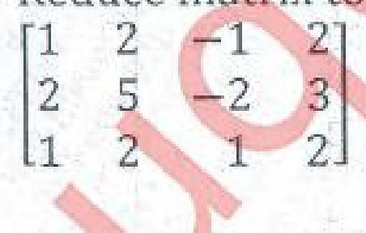

Total there will be approx 6 questions each of 3 marks , from all the chapters of the syllabus(Attempt any 5).
-
- If cosαcoshβ=x/2,sinαsinhβ=y/2,prove that sec(α-iβ)+sec(α+iβ)=4x/(x2+y2). [3]
- If z=log(ex-ey),show that rt-s2=0,where [3]
r=∂2z/∂x2 ;t=∂2z/∂y2 ;s=∂2z/∂x∂y - If x=uv,y=u+v/u-v.Find ∂(u,v)/∂(x,y). [3]
- If y=2xsin2xcosx find yn [3]
- Express the matrix
as the sum of symmetric and skew symmetric matrices. [4]
- Evaluate lim e2x-(1+x)2/xlog(1+x) [4]
x→0
-
- Show that the roots of x5=1 can be written as 1,α,α2,α3,α4.Hence show that (1-α)(1-α2)(1-α3)(1-α4)=5 [6]
- Reduce the following matrix to it's normal form and hence find it's rank. [6]

- Solve the following system of equations by Gauss-Seidel Iterative method upto 4 iterations. [8]
4x-2y-z=40
x-6y+2z=-28
x-2y+12z=-86
- Investigate for what values of 'λ' and 'μ' the system of equations [6]
x+y+z=6
x+2y+3z=10
x+2y+λz=μ
has- no solution
- a unique solution
- an infinite no of solutions.
- If u=x2+y2+z2,where x=et,y=etsint,z=etcost [6]
Prove that du/dt=4e2t - Show that sin(ex-1)=x+x2/2-5x4/24+..... [4]
- Expand 2x3+7x2+x-6 in powers of x-2 [4]
- Show that sin(ex-1)=x+x2/2-5x4/24+..... [4]
- Investigate for what values of 'λ' and 'μ' the system of equations [6]
- If x=u+v+w,y=uv+vw+uw,z=uvw and Φ is a function of x,y and z. [6]
Prove that x∂Φ/∂x;x+2y∂Φ/∂y+3z∂Φ/∂z=u∂Φ/∂u+v∂Φ/∂v+w∂Φ/∂w. - If tan(θ+iφ)=tanα+isecα [6]
Prove that- e2φ=cotα/2
- 2θ=nπ+π/2+α
- Find the root of the equation x4+x3-7x2-x+5=0 which lies between 2 and 2.1 correct to three places of decimals using Regula Falsi method. [8]
- If x=u+v+w,y=uv+vw+uw,z=uvw and Φ is a function of x,y and z. [6]
-
- If y=(x+√x2-1)m.Prove that (x2-1)yn+2+(2n+1)xyn+1+(n2-m2)yn=0. [6]
- Using the encoding matrix ,encode and decode the message i*LOVE*MUMBAI* [6]
- Using the encoding matrix ,encode and decode the message i*LOVE*MUMBAI* [6]
- If y=(x+√x2-1)m.Prove that (x2-1)yn+2+(2n+1)xyn+1+(n2-m2)yn=0. [6]
- Considering only principal values separate into real and imaginary parts ilog(i+1) [4]
- Show that ilog(x-i/x+i)=Π-2tan-1x [4]
-
- Using De Moivre's theorem prove that [6]
cos6θ-sin6θ=1/16(cos6θ+15cos2θ) [6]
- If u=sin-1((x1/3+y1/3)/(x1/2-y1/2))1/2,Prove that
x2∂2u/∂x2+2xy∂2u/∂x∂y+y2∂2u/∂x2=tanu/144(tan2u+13) - Discuss the maxima and minima of f(x,y)=x3y2(1-x-y) [8]
- Using De Moivre's theorem prove that [6]
-
- Separate into real part and imaginary of cos-1(3i/4). [3]
- Show that the matrix A is unitary where is unitary if α2+β2+γ2+δ2=1 [3]
- If z=tan(y+ax)+(y-ax)3/2then show that ∂2z/∂x2=a2∂2z/∂y2 [3]
- If x=uv y=u/v Prove that JJI=1. [3]
- Find the nth derivative of x3/(x+1)(x+2) [4]
- Using the matrix decode the message matrix
 [4]
[4]
-
- If sin4θcos3θ=acosθ+bcos3θ+ccos5θ+dcos7θ then find a,b,c,d. [6]
- Using Newton Raphson method solve 3x-cosx-1=0.Correct to three decimal places. [6]
- Find the stationary points of the function x3+3xy2-3x2-3y2+4 and also find the maximum and minimum values of the function. [8]
- Show that [6]
xcosecx=1+x2/6+7x4/360+....
- Reduce matrix to PAQ normal form and find 2 non-singular matrices P&Q. [6]

- If y=cos(msin-1x)Prove that (1-x2)yn+2-(2n+1)xyn+1+(m2-n2)yn=0 [8]
- Show that [6]
- State and prove Euler's theorem for three variables. [6]
- Show that all the roots of (x+1)6+(x-1)6=0 are given by -icot((2k+1)π/12) where k=0,1,2,3,4,5. [6]
- Show that the equations [8]
-2x+y+z=a
x-2y+z=b
x+y-2z=c
have no solutions unless a+b+c=0 in which case they have infinitely many solutions.
Find these solutions when a=1,b=1,c=-2
-
- If z=f(x,y) x=rcosθ [6]
y=rsinθProve that
(∂z/∂x)2+(∂z/∂y)2=(∂z/∂r)2+1/r2(∂z/∂θ)2+ - If cos hx=secθ Prove that [6]
- x=log(secθ+tanθ)
- θ=π/2-2tan-1(e-x)
- Solve by Gauss Jacobi iteration method [8]
5x-y+z=10
2x+4y=12
x+y+5z=-1
- If z=f(x,y) x=rcosθ [6]
-
- Prove that cos-1[tan h(logx)]=π-2(x-x3/3+x5/5-----) [6]
- If y=e2xsinx/2cosx/2sin3x.Find yn. [6]
- Evaluate lim(cot x)sinx [4]
x→0
- Prove that log[sin(x+iy)/sin(x-iy)]=2itan-1(cot x tan hy). [4]
- Evaluate lim(cot x)sinx [4]
-
- Show that sech-1(sin θ) = log cot (θ/2) [3]
- Show that the matrix A=1/2is unitary. [3]
- Evaluate lim sinx logx [3]
x→0
- Find the nth derivative of y=eaxcos2xsinx [3]
- If x = rcosθ and y = rsinθ prove that JJ’=1 [4]
- Using coding matrix
 encode the message
encode the message
THE CROW FLIES AT MIDNIGHT [4]
-
- Find all values of(1+i)1/3 and show that their continued product is ( 1 + i). [6]
- Find the non singular matrices P & Q such that PAQ is in normal for where [6]
- Find max. and minimum values of x3+3xy2−15x2−15y2+72x. [8]
- If u=exyzf(xy/z)prove that x∂u/∂x+z∂u/∂z=2xyzu and y∂u/∂y+z∂u/∂z=2xyzu and hence show that x∂2u/∂x∂z=y-ax∂2u/∂y∂z. [6]
- By using Regular falsi method solve 2x -3sinx-5 =0.correct to three decimal places. [6]
- If y=sin[log(x2+2x+1)]then prove that [8]
(x + 1)2yn+2+(2n + 1)(x + 1)yn+1+ (n2+ 4)yn= 0
- State and prove Eulers Theorem for three variables. [6]
- By using De Moivres Theorem obtain tan 5θ in terms of [6]
tanθ and show that 1-10tan2(π/10)+5tan4(π/10)=0 - Investigate for what values of λ and μ the equations [8]
2x + 3y + 5z =9
7x + 3y - 2z = 8
2x +3y + λz = μ have
- No solution
- Uniquesolution
- An infinite number ofsolution
-
- Find the nth derivative of 1/(x2+a2). [6]
- Ifz=f(x,y)where x=eu+e-v,y=e−u−ev then [6]
prove that ∂z/∂u-∂z/∂v=x∂z/∂x-y∂z/∂y
- Solve by using Gauss Jacobi Iteration method [8]
2x + 12 y + z – 4 w =13
13x + 5 y – 3z + w = 18
2x + y – 3z +9 w = 31
3x – 4y + 10 z + w = 29
-
- If y=log[tan(π/4+x/2)]prove that [6]
- tanh y/2=tan x/2
- cosh y cosx=1
- If u=sin-1((x1/3+y1/3)/(x1/2-y1/2))1/2,Prove that [6]
x2∂2u/∂x2+2xy∂2u/∂x∂y+y2∂2u/∂x2=tanu/144(tan2u+13) - Expand 2x3+7x2+x−6 in powers of (x–2) by using Taylors theorem. [4]
- Expand sec x by Maclaurins theorem considering upto x4 term. [4]
- If y=log[tan(π/4+x/2)]prove that [6]
-
- Prove that tanh-1(sinθ)=cosh-1(secθ) [3]
- Prove that the matrix 1/√3 is unitary [3]
- If x=uv & y=u/v prove that JJ1=1 [3]
- If Z=tan-1(x/y) where x=2t,y=1-t2,prove that dZ/dt=2/1+t2 [3]
- Find the nth derivative of (cos5x.cos3x.cosx) [4]
- Evaluate lim (x)1/1-x [4]
x→0
-
- Find all values of (1+i)1/3 & show that their continued product is (1+i) [6]
- Find non singular matrices P&Q such that PAQ is in normal form where [6]
- Find the maximum & minimum values of f(x,y)=x3+3xy2-15x2-15y2+72x [8]
- If u=f(y-x/xy,z-x/xZ) ,show that [6]
x2∂u/∂z+y2∂u/∂y+z2∂u/∂Z=0
- Using encoding matrix ,encode & decode the message 'MUMBAI'. [6]
- Prove that log=(tan(π/4+ix/2))=itan-1(sinh x) [8]
- If u=f(y-x/xy,z-x/xZ) ,show that [6]
- Obtain tan5θ in terms of tanθ & show that 1-10tan2π/10+5tan4π/10=0 [6]
- If y=etan-1x,prove that [6]
(1+x2)yn+2+[2(n+1)x-1]yn+2+n(n+1)yn=0
- Express (2x3+3x2-8x+7)in terms of (x-2) using Taylor's theorem. [4]
- Prove that tan-1x=x=x3/3+x5/5-x7/7+------- [4]
-
- If z=x2tan-1(y/x)-y2tan-1(x/y) [6]
Prove that ∂2/∂x∂y=x2-y2/x2+y2
- Investigate for what values of λ & μ the equations [6]
2x+3y+5z=9
7x+3y-2z=8
2x+3y+λz=μ
- no solution
- a unique solution
- an infinite no.of solutions
- Using Newton Raphson method,find approximate root of x3-2x-5=0 (correct to three place three places of decimals.) [8]
- If z=x2tan-1(y/x)-y2tan-1(x/y) [6]
-
- Find tanhx if 5 sinhx-coshx=5 [6]
- If u=sin-1(x+y/√x+√y)prove that [6]
- xux+yuy=1/2tanu
- x2uxx+2xyuxy+y2uyy=-sin u cos2u/4cos2u
- Solve the following systems of equations by Gauss-seidel method [8]
2x+y-2Z=17
3x=20y-Z=-18
2x-3y+20Z=25
-
- If tan(x/2)=tanh(u/2),show that u=log[tan(π/4+x/2)]. [3]
- Prove that the following matrix is orthogonal & hence find A-1 [3]

- State Euler's theorem on Homogeneous function of two variables & if [3]
u= x+y/x2+y2 then evaluate x∂u/∂x+y∂u/∂y.
- If u=r2cos2θ, v=r2sin2θ.Find ∂(u,v)/∂(r,θ). [3]
- Find the nth derivate of cos5x.cos3x.cosx. [4]
- Evaluate lim(2x+1/x+1)1/x [4]
x→0
-
- Solve x4-x3+x2+1=0 [6]
- If y=etan-1x.Prove that (1+x2)yn+2+[2(n+1)x-1]yn+1+n(n+1)yn=0 [6]
- Examine the function f(x,y)=xy(3-x-y) for extremes values & also find maximum and minimum values of f(x,y). [8]
- Investigate for what values of λ & μ the equations [6]
x+y+z=6;
x+2y+3z=10;
x+2y+λz= μ have- no solution
- a unique solution
- infinite no. of solutions.
- If u=f(y-x/xy,z-x/xz),show that x2∂u/∂y+y2∂u/∂y+z2∂u/∂y=0. [6]
- Prove that log(a+ib/a-ib)=2itan-1(b/a)&cos[ilog(a+ib/a-ib)]=a2-b2/a2+b2 [8]
- Investigate for what values of λ & μ the equations [6]
- If u=sin-1(x+y/√x+√y),prove that [6]
x2uxx+2xyuxy+y2uyy=-sinu cos2u/4cos3u
- Using encoding matrix;encode & decode the message
'ALL IS WELL'. [6]
- Solve the following equations by Gauss Seidal method: [8]
10x+x+x=12
2x+10x+x=13
2x+2x+10x=14
- If u=sin-1(x+y/√x+√y),prove that [6]
-
- If u=exyzf(xy/z)where,f(xy/z) is an arbitrary function of xy/z, [6]
Prove that x∂u/∂x+z∂u/∂z=y∂u/∂y+z∂u/∂z=2xyz.u - Prove that sin5θ=1/16(sin5θ-5sin3θ +10sinθ). [6]
- Prove that log(secx)=1x2/2+1x4/12+....... [4]
- Expand (2x3+7x2+x-1) in powers of (x-2). [4]
- If u=exyzf(xy/z)where,f(xy/z) is an arbitrary function of xy/z, [6]
-
- Prove that sin-1(cosecθ)=π/2+ilog(cot θ/2). [6]
- Find non-singular matrices P & Q such that is recuded to normal form. Also find its rank. [6]
- Obtain the root of x3-x-1=0 by Regula Falsi Method (Take three iterations). [8]